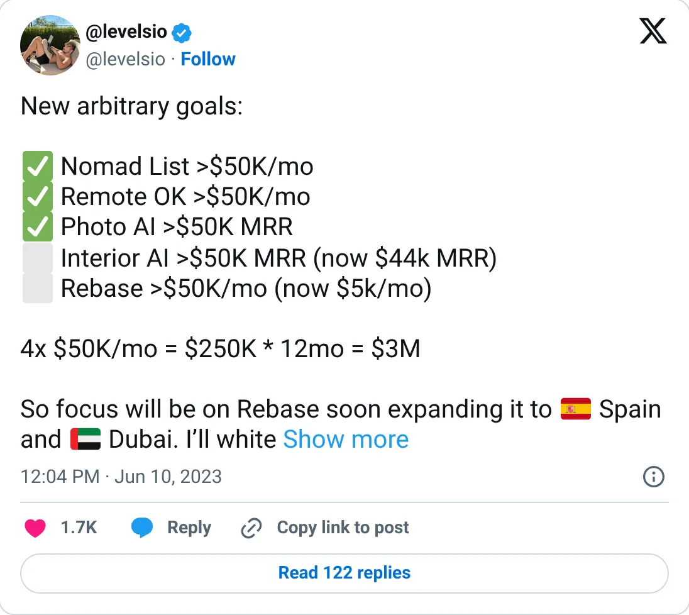
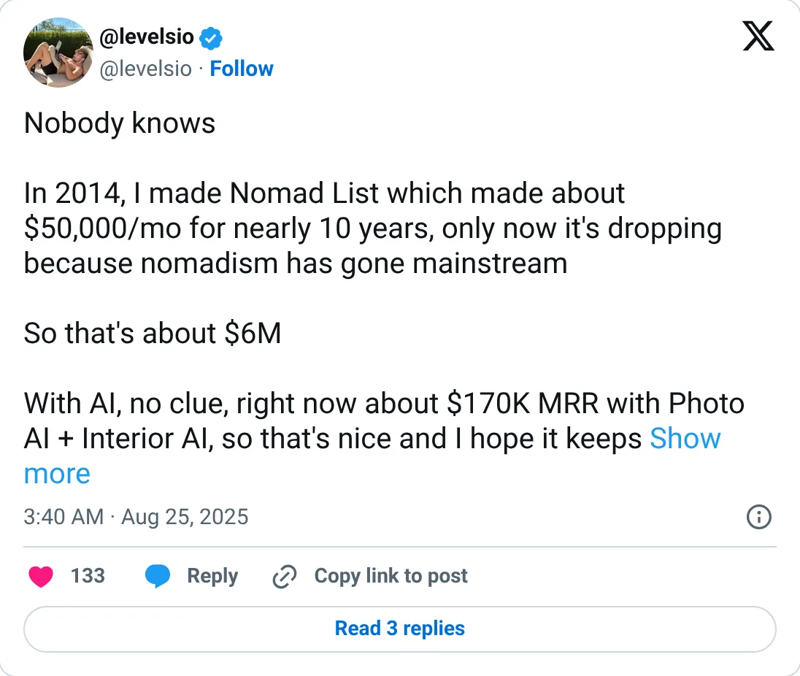

Not a pick
Nomad List (nomads.com)
The ledger looks real. It is not one of the clearer things to start next.
$12K / month
Should you build this
The money looks real, and it is still not a recommendation to start a copy. Nomad List's ranked number is the October 8, 2026 bio: $12K a month. The older posts say over $50K a month in 2023, and in August 2025 he wrote that it had made about $50K a month for nearly ten years and was now dropping. Membership revenue that depended on a nomad boom can fall that far. He put the smaller number in the bio anyway. Self-reported, current, and pointed downhill.
Cited from the captured posts, shown below: the earliest captured post (Jun 10, 2023) is the source for “Over $50K/month”; the latest milestone (Aug 25, 2025) is the source for “"Made ~$50K/mo for nearly 10 years, now dropping"”.
Posts this is based on

Over $50K/month
Open on X

"Made ~$50K/mo for nearly 10 years, now dropping"
Open on X
What the product is
Membership community and city database for digital nomads: cost of living, internet speed, safety, meetups and a dating/social layer.